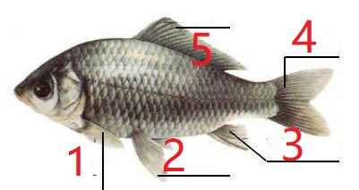

1.与鸟类飞翔生活无直接关系的特征是(B ) A、身体呈流线型，体被羽毛 B、具有坚硬的角质喙 C、长骨中空，充满空气 D、有发达的胸肌
2.具有外骨骼的动物是(C ) A、蛇 B、鱼 C、螳螂 D、蚯蚓
3.下列是环节动物的是(A ) A、沙蚕 B、金环蛇 C、带鱼 D、龙虾
4.下列属于恒温动物的是(C ) A、鱼类 B、爬行类 C、鸟类 D、两栖类
5.属于两栖动物的是(B ) A、蛇 B、蟾蜍 C、龟 D、鸭子
6.青蛙必须生活在潮湿的环境中，主要原因是(D ) A、青蛙必须在水中完成受精作用 B、幼体生活在水中 C、皮肤裸露，无鳞、羽毛、甲等覆盖 D、肺不发达，结构简单，需皮肤辅助呼吸
7.写出下面各图中各部分的名称
